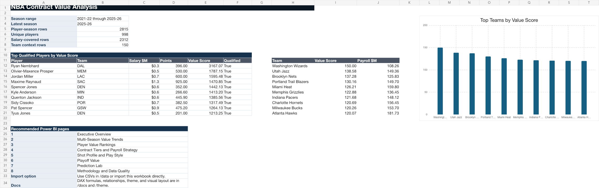
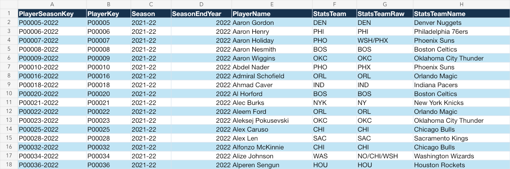
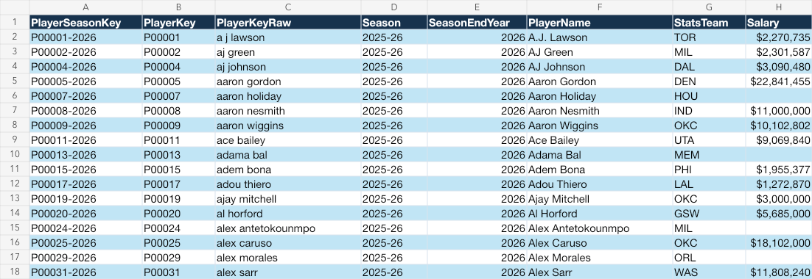
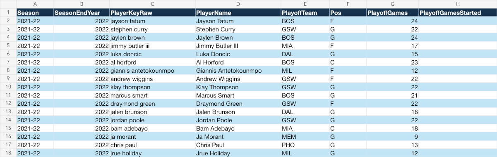
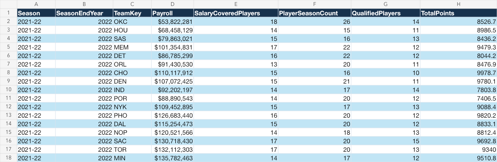
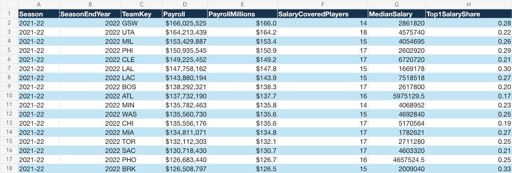
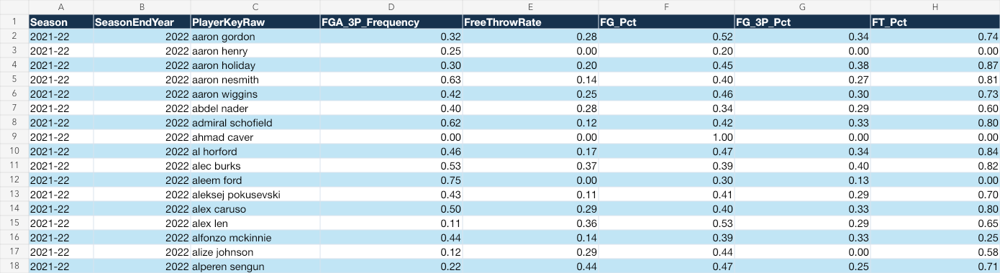
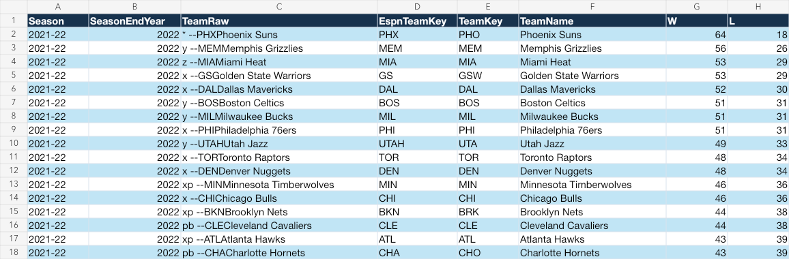

Dataset Snapshot
Season Range2021-22 to 2025-26
Player-Seasons2,815
Unique Players998
Salary-Covered Rows2,312
Playoff Rows1,097
Team Context Rows150
Main Files
Excel WorkbookOpen the companion workbook with overview and all generated tables.
Project ZIPDownload/open the full packaged project.
READMEProject question, source notes, file map, and dataset snapshot.
Project Summary JSONMachine-readable summary of the generated output.
Report Layout MockupVisual reference for the Power BI report layout.
Power BI ThemeImport this JSON theme into Power BI.
{kind=link}
Workbook Previews








CSV Data Tables
fact_player_value.csvMain player-season fact table.
player_pace_adjusted.csvPer-36 player rate stats.
player_shooting_profile.csv3P share, FT rate, eFG%, TS%, double/triple doubles.
player_playoff_performance.csvPostseason production and playoff value.
player_predictions.csvLatest-season next-season forecast outputs.
prediction_backtest.csvPrediction backtest rows and errors.
prediction_model_metrics.csvRMSE, MAE, and training row counts.
team_efficiency.csvTeam payroll efficiency by season.
team_context.csvStandings, scoring, and point differential.
team_payroll_allocation.csvPayroll concentration and position allocation.
salary_unmatched.csvSalary rows without matched player-season stats.
data_dictionary.csvImportant table and column definitions.
measure_catalog.csvPower BI measure catalog.
source_notes.csvSource and caveat notes.
dim_player.csvPlayer lookup table.
dim_team.csvTeam lookup table.
dim_position.csvPosition lookup table.
dim_season.csvSeason lookup table.
Docs And Build Files
Power BI Build GuideImport steps, relationships, data types, and report pages.
DAX MeasuresSuggested measures for the Power BI report.
Report WireframeEight-page report plan and visual ideas.
UI Style GuideTheme, layout, tooltip, and formatting guidance.
Data Builder ScriptRebuilds CSVs, docs, theme, and summary.
Workbook Builder ScriptRebuilds the Excel companion workbook.
requirements.txtPython dependencies for refreshing the data.